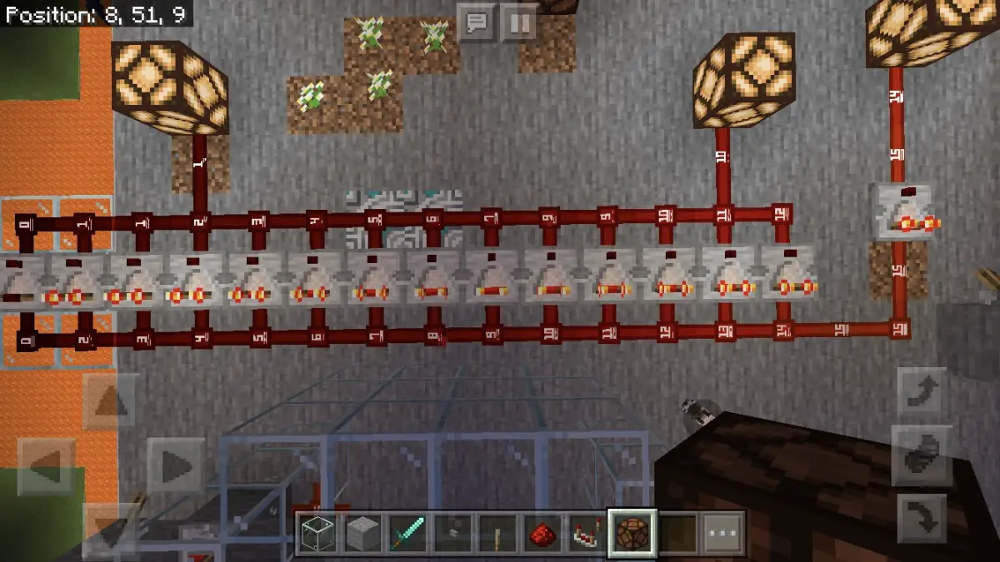
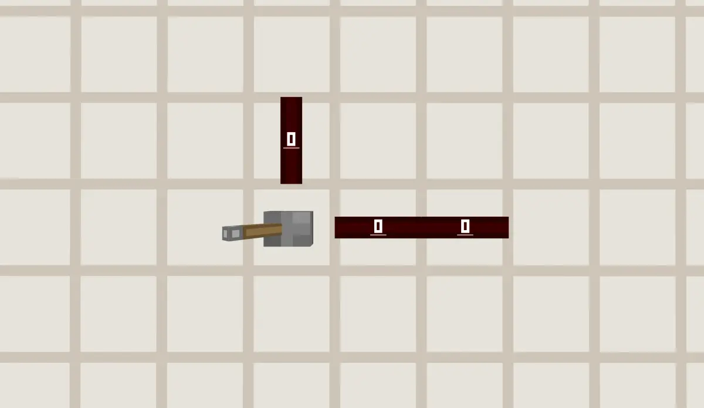
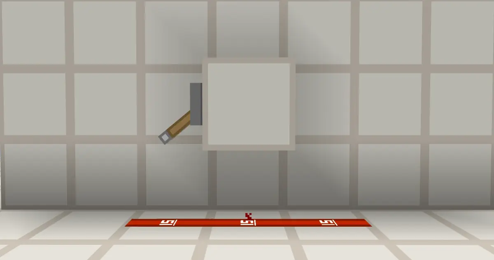
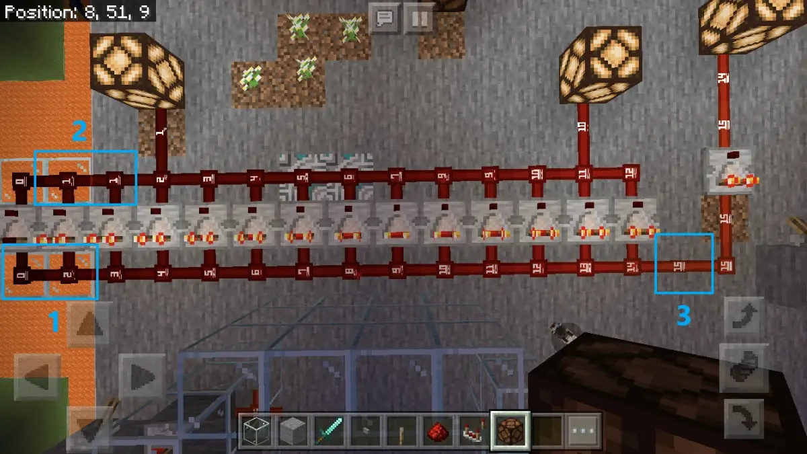
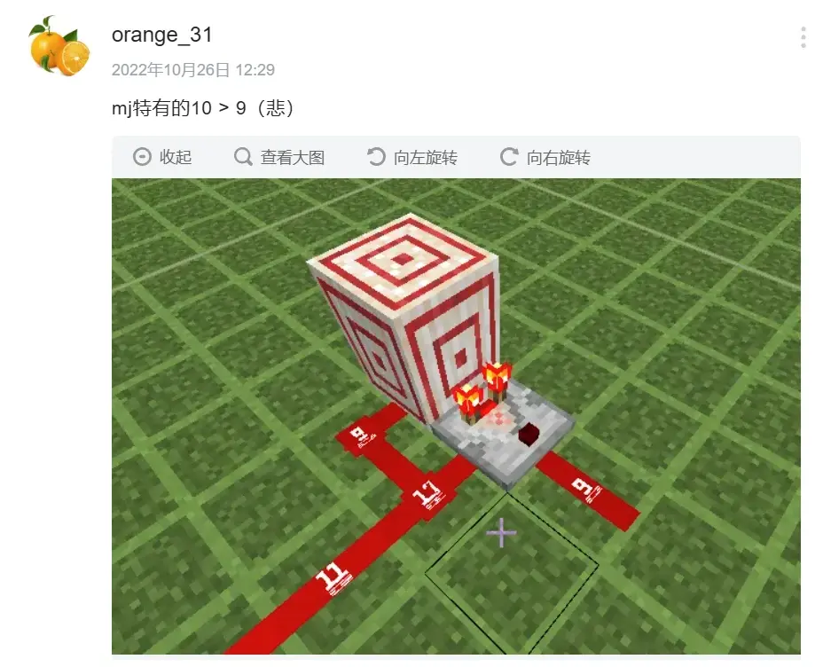

曾出现在基岩版的"玄学现象" ~ 红石粉信号强度的计算
不知你是否见过下面这张截图：

MCPE-81981
乍一看没什么，仔细观察却发现满满的槽点：
- 注意左边，信号强度从 2 直接衰减到了 0；
- 视线上移一点点，有两个比较器输出了 1，且一整排比较器输出与输入信号强度不一致；
- 还有，拉杆处，凭空变出来一个 15 强度的红石粉。

MCPE-81981
这张图没有造假，它截自 Beta 1.16.0.66，并出现在 Mojang 漏洞追踪器上，编号 MCPE-81981。这个奇特的现象一直持续到 1.19.40.20 Preview 才被修复。
一. 分析
元件搜索过程
核心是广度优先搜索算法，搜索的起点为信号源（生产者或电容器）。最大搜索距离为 15，搜索距离即为阻尼(dampening)。
为实现该过程，mojang 使用一个叫 CircuitTrackingInfo 的结构来保存搜索到的元件信息，为方便下文称之为追踪表：
- 搜索元件是为了添加信号源，所以信号源的信息必须一直在表内，也即 mPower(信号源项)。
- 以一个元件为中心，搜索周围 6 个面的方块，这些信息也要保存，中心元件即为 mNearest(最近项)，搜索到的方块即为 mCurrent(当前项)。
- 同时，因为默认搜索 6 个面的方块，为防止 A 搜索到 B，B 又反过来搜索 A，所以追踪表内还得再添加一项 m2ndNearest。
- 最后，再加上 mDampening(阻尼)，就得到了追踪表的结构：
class CircuitTrackingInfo {
Entry mCurrent;
Entry mNearest;
Entry m2ndNearest;
Entry mPower;
int mDampening;
// Entry内包含元件的指针、坐标等信息
};除此之外，还有 mDirectlyPowered、mData 这两个数据，前者用于描述激活方式，默认为 true，后者用于具体元件需要的信息，默认为 0，比如铁轨用于保存铁轨间信号传递距离。

上北下南
现在以拉杆搜索三个红石粉为例，实际感受一下搜索过程：
- 按照下上北南西东的顺序依次遍历拉杆 6 个方向的方块：
- 从队列中逐个取出暂存的追踪表直至为空，队列先进先出：
以上是简化的搜索流程，实际上远比这个复杂，比如特定情况下除了搜索 mNearest 的六个面，还会搜索 mNearest 顶部四周、底部四周的方块。
allowConnection、addSource
这两个函数除了字面功能外还要负责更新 mDirectlyPowered，addSource 还要更新 mDampening。
红石粉的 allowConnection 函数主要是各种判断引线压线的判断，这里省略。而红石粉的 addSource 则是本文重点，因为红石粉是唯一一个能使 mDampening 增加的元件。
在这个函数中，红石粉先检查 mNearest 是否为弱充能方块，如果是，则显然弱充能方块不能激活红石粉，直接返回 false。
然后，红石粉会更新 mDirectlyPowered，根据代码逻辑和个人经验 mDirectlyPowered 恒为真，所以暂时不细讲（实际上这里更新 mDirectlyPowered，并不会修改追踪表内的 mDirectlyPowered，除非 addSource 返回 true，也即元件成功添加信号源）。
最后，本文重点中的重点，红石粉调用 trackPowerSource 函数，这个函数是基类提供的，其给出了较为通用的向信号源表添加或更新信号源的方法，红石粉、中继器、比较器都借助了这个函数。添加成功返回 true。
bool BaseCircuitComponent::trackPowerSource(const CircuitTrackingInfo &info, int dampening, bool directlyPowered, int data);该函数需要传入一个 dampening，红石粉也就是这个时候，对阻尼进行+1 操作，但是此时的+1 并没有修改追踪表内的阻尼，除非 addSource 返回 true。
这里微软的员工为自己挖了一个小坑，也即：trackPowerSource 函数得到的 dampening 值与追踪表(info 参数就是追踪表)内的阻尼不一致。
trackPowerSource
- 遍历本元件的信号源表，依靠坐标来判断是否为同一个元件
- 如果有重复，则需要更新一下信号源信息，包括该信号源的阻尼、mDirectlyPowered：
是不是很绕？没逝的，反正这段代码的作者自己也被绕了。所以也不用再看上面的话，试图理解什么要更新什么不要更新。
真假阻尼
现在我们有两点问题：
- 正确的阻尼是多少？
- 实际的阻尼是多少？

以开头的现象为例，来看看它们的阻尼：
- 以拉杆为中心，搜索 6 个面，显然下面的三个红石粉均会被搜索两次，一次从拉杆直接往下搜索，一次先搜索石英块，再向下搜索。为方便，前者称为 A 路，后者称为 B 路。可以发现，三个红石粉均先被 A 路搜索到，再被 B 路搜索到。
- 左边红石粉最先被搜索到，由于其无已有信号源，直接添加拉杆为信号源。此过程中，trackPowerSource 函数的形参 dampening 为 1，加入信号源列表的阻尼为 dampening - 1 = 0，此时 A 路搜索表的阻尼变为 1.
- 石英块后被搜索到，阻尼不变，为默认的 0。
- 左红石粉搜索 6 面方块，搜索到中间红石粉，添加信号源。此过程中，trackPowerSource 函数的形参 dampening 为 2，加入信号源列表的阻尼为 dampening - 1 = 1，此时 A 路搜索表的阻尼变为 2.
- 同理右红石粉在 A 路添加信号源时，加入信号源列表的阻尼为 2.
- 再看看 B 路，中间红石粉被第二次搜索到时，其信号源列表中必定已有拉杆：
if (iter.mDampening - 1 <= info.mDampening - 1) {
// 旧的小
} else {
// 换新的
}其中 iter 就是表中的信号源。可见这个判断语句跟开头的图一样，槽点满满...
旧的信号源的阻尼为什么要减 1？存进信号源表内的已经是减过了的啊。
再看右边，这里又用的是 info.mDampening，也就是追踪表内的阻尼，前文提到过，追踪表内的阻尼与函数形参 dampening 的值不一样，前者小一个单位。
那好，跟着这个逻辑走会怎么样？
对于中间红石粉，前为 1 - 1 = 0，后为 0 - 1 = -1，要换新的；
对于右边红石粉，前为 2 - 1 = 1，后为 1 - 1 = 0， 要换新的。
好像也是要换新的，然后你就会发现，他把 info.mDampening - 1 的结果存入信号源表中的阻尼了（小于 0 的取 0）。
iter.mDampening = info.mDampening - 1 < 0 ? 0 : info.mDampening - 1;于是你就会发现，中间红石粉阻尼为 0，结果是对的；右边红石粉阻尼也为 0，我不知道结果对不对，反正代码作者以为是对的。
因为
信号强度 = 信号源强度 - 阻尼
所以，右边的红石粉就是 15 - 0 = 15。
结束问题

再看看左边为什么从 2 直接变为 0，虽然这一排红石粉自己存的阻尼是错的，但是追踪表内的阻尼是没有问题的，而搜索过程中追踪表内的阻尼大于 15 就直接结束，拉杆和其附着的石头下面的红石粉对应追踪表阻尼为 1，数一数，最右边大小为 3 处红石粉的 A 路追踪表阻尼刚好为 15，会进行最后一次搜索，大小为 2 处红石粉虽然不会从 A 路被激活，但是仍会添加信号源；而再左边一格的红石粉(大小为 0)，其无法被 A 路搜索到，即使被 B 路搜索到，也不会受前面乱七八糟的影响。
再来看看比较器，比较器也受这个影响，但是比较器不会增大阻尼，回到上面追踪表内的阻尼跟函数形参 dampening 本就是同一个值，然后在那个错误的 if 句的作用下，很巧地每个比较器都没有更新阻尼，都用的 A 路的阻尼，除了最左边的一个比较器，它已经不能被 A 路搜索到了，但是还能被 B 路搜索到，于是只有它一个阻尼是对的。
Mojang 修 Bug 之新增了 114514 个 Bug
这个修起来很简单，前面的 info.mDampening 全部换成函数形参 dampening，再把 if 句换成这样就行了：
if (iter.mDampening <= dampening- 1)所以 mojang 在确认这个 bug 之后，迅速展开行动，仅仅花了一周零 817 天，便完成修复。同时，为了展现自己高超的技术并提高代码鲁棒性，mojang 预防性地修改了比较器的代码，最后为广大红石玩家带来了一个振奋人心的好东西：

好 东 西
这玩意我不讲，单纯乱修整出来的bug。
有关链接
- https://bugs.mojang.com/browse/MCPE-81981 信号强度计算问题
- https://bugs.mojang.com/browse/MCPE-163651 船新比较
- 网页链接 Mojang 妙妙红石系统深度赏析，好评如潮，绝赞连载中！！！（大雾
E N D